例题 1
例 1 (1)方程 是圆心在坐标原点、半径为 1 的圆的方程吗? 为什么?
(2)方程 是过点 与 的直线的方程吗? 为什么?
教师整合版 / 沪教版高中数学
选择性必修第一册
第2章圆锥曲线 · 保留教材主线与原题
教材与正式教参整合
在本章 2.1 节中我们给出了曲线方程的定义. 根据此定义, 要确认一个二元方程 是一条平面曲线 的方程,必须验证如下两个条件都满足:
(1)曲线 上的点的坐标都是方程 的解;
(2)以方程 的解为坐标的点都是曲线 上的点.
现在大家对这个过程应该比较熟悉了, 因为在上一章和本章中给出直线、圆、椭圆、双曲线和抛物线时, 都强调过这样的验证. 例如, 在本章 2.1 节中圆的方程的推导过程中我们就详细写出了正反两个方向的推导过程. 但在椭圆、双曲线和抛物线方程的推导过程中, 为了避免行文的累赘, 在强调反方向验证时, 我们只说“将上述推理过程反过来推演即可”. 希望同学们能自行补充“反过来推演”的过程 (见本章习题 2.5A 组第 1 题).
下面的例 1 用反例再次说明上述条件(1)和条件(2)缺一不可.
例 1 (1)方程 是圆心在坐标原点、半径为 1 的圆的方程吗? 为什么?
(2)方程 是过点 与 的直线的方程吗? 为什么?
例 2 已知点 是距离为 4 的两个定点,动点 满足 . 建立适当的平面直角坐标系,求动点 的轨迹方程.
解 如图 2-5-1,以直线 为 轴,线段 的垂直平分线为 轴,建立平面直角坐标系,则两定点为 .
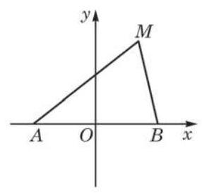
图 2-5-1
设动点 的坐标是 ,则 . 因为 ,所以
化简, 得
这表明, 动点轨迹上任意点的坐标都满足这个方程.
反过来,设平面上一点 的坐标 满足方程,即有 ,则
从而,以方程 的解为坐标的点都在轨迹上.
综上所述,方程 就是所求的动点 的轨迹方程.
要证明一个给定的关于 的方程是一条给定曲线的方程, 有时可以把条件(1)和条件(2)放在一起验证. 此时要验证的是如下的充要条件:一点在给定曲线上当且仅当该点的坐标是给定方程的解.
例 3 也可按步骤 2、3 证明,但不要忽略了步骤 3 :假设点 的坐标是方程 的解,要找到曲线 上的一点 ,使 是线段 的中点.
例 3 求连接定点 和曲线 上动点 的线段 的中点 的轨迹方程.
解 对平面上一点 ,条件“ 是线段 的中点”的坐标表示是
由所求轨迹的定义,点 在轨迹上当且仅当点 在曲线 上,即当且仅当 . 把点 的坐标用点 的坐标替换并化简,得
所以,点 在轨迹上当且仅当它的坐标是方程 的解.
由此可见,所求的轨迹方程是 .
(1) ， ； (2) ； (3) .
在求轨迹的方程时, 有时根据条件很难直接建立曲线上的动点坐标 所满足的方程,但如果引入合适的第三个变量,分别建立 与第三个变量的联系,问题常常会比较容易得到解决.
我们先来看一个熟悉的问题: 假设空气阻力忽略不计,求炮弹被击发后的运动轨迹的方程.
即使建立平面直角坐标系, 炮弹的运动规律也难以直接用炮弹位置的坐标 与 的方程表示出来. 在物理学中,我们知道, 当发射角 、发射时的初速度 确定后,炮弹位置只与运行时间 有关,所以可以考虑引入时间 作为第三个变量来求运动轨迹的方程.
以炮口所在位置 为坐标原点,水平方向为 轴,铅垂方向为 轴,建立平面直角坐标系,如图 2-5-2 所示. 设炮弹发射 s后的位置在点 处. 炮弹的初速度 可分解为水平方向和铅垂方向的两个速度,其中在水平方向上的初速度为 , 在铅垂方向上的初速度为 . 由于忽略了空气阻力,炮弹在运动过程中只在铅垂方向受到重力作用. 容易求得, 炮弹的位置坐标 与时间 之间的关系:
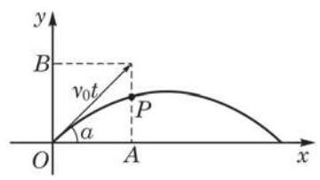
图 2-5-2
其中 是重力加速度的值, 是炮弹击中目标的时刻.
我们把上述方程组中的变量 消去后,观察它表示的是什么曲线. 由第一个方程得 ,代入第二个方程,消去参数 ,得到炮弹运动的轨迹方程为
由于 都是定值,因此炮弹运动的轨迹是一条抛物线.
在这个实际问题中, 炮弹运动的轨迹不可能是整条抛物线. 首先,因为炮弹被击发前是静止的,必须 . 又因为炮弹击中目标后也不再按原有轨迹运动，所以我们所讨论的炮弹运动轨迹只是 与炮弹击中目标前的一段抛物线. 例如，设目标点与发射点在同一水平线上,则恒有 ,从而由 求得 . 因此,炮弹运动轨迹是上述抛物线在 之间的部分.
由上述讨论可以看到, 在求曲线方程时, 我们可以先分别求出 与某个随动点变化的变量 所满足的方程 , ,得到方程组:
其中 在某个范围内变动.
但在不少情况下, 由曲线的参数方程并不一定能够化为曲线的普通方程. 举一个通俗的例子. 假设有一只小虫在平面直角坐标系中爬行,小虫的位置坐标 是时间 的函数:
这揭示了小虫随时间 变化的运动规律,就是小虫运动轨迹的一个参数方程. 由于小虫爬行的轨迹不似炮弹那样一直向前, 而是可以倒退及与自身相交, 不可能化为普通方程, 这时, 用参数方程来表示这一复杂的运动轨迹就成了唯一合理的选择了.
由此可见, 用参数方程表示一个曲线, 不仅可能有具体的物理或几何意义, 也更具有一般性, 应用起来有时也更为简便.
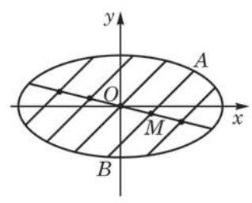
图 2-5-3
例 4 求所有斜率为 1 的直线被椭圆 所截得的线段的中点的轨迹.
解 如图 2-5-3,设直线 被椭圆所截得的线段的两个端点 的坐标 是如下方程组的解:
消去 ,并整理得
当判别式 ,即 时,上述方程有两个不同的实数解,即直线被椭圆所截的线段存在并且线段两个端点横坐标之和为 .
设 的中点为 ,则
所以,
还可用什么方法求解例 4 ?
就是线段 的中点 的轨迹的参数方程.
消去 ,得 . 由 及 ,可得 . 所以点 的轨迹方程为 , ,即点 的轨迹是直线 在椭圆内的部分.
例 5 已知点 在椭圆 上，求 的最大值,并求 取得最大值时点 的坐标.
解 利用三角恒等式 ,可以验证
是椭圆 的一个参数方程,所以点 的坐标满足
因为 ,所以可以找到锐角 ,使得 , ,从而
当 时, 最大. 要取得最大值, ,即 ,这里 . 此时对应的点 的坐标为 ,即点 的坐标为 .
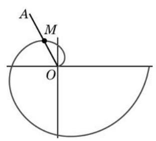
图 2-5-4
但是, 在平面直角坐标下要建立等速螺线的方程是一件比较复杂的事:把两点的距离用点的坐标写出, 需要用到二次根式; 而把旋转角用坐标表示出来, 更要借助于反三角函数. 因此, 研究等速螺线及其他类似曲线, 需要另辟蹊径.
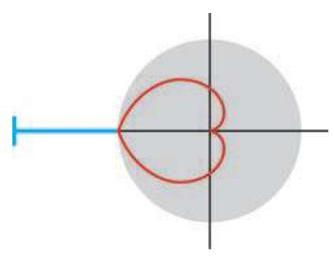
图 2-5-5
事实上, 确定平面上点的位置, 采用平面直角坐标系并不是唯一的方法. 现实生活中, 人们也常用方向 (实际上是角) 和距离来确定平面上点的位置. 例如, 图 2-5-6 所示的是雷达上发现北偏东 方向 处有不明飞行物体. 这样表示平面上点的位置就是我们将要研究的另外一种坐标系 —— 极坐标系的基本思想.
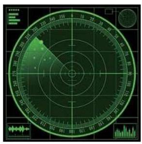
图 2-5-6
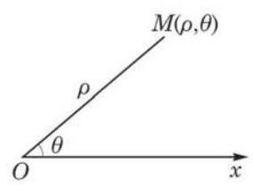
图 2-5-7
与平面直角坐标系不一样的是, 在极坐标系中, 点的极坐标不唯一,如果 是一点的极坐标,那么 都可以作为它的极坐标. 我们还允许 取负值,当 时,规定 对应的点为 . 此外,规定极点的坐标为 , 其中 可以是任意角.
不难发现,在极坐标系中,点 与 关于极点对称,点 与 关于极轴对称.
尽管在极坐标系中点的坐标不唯一, 但是在极坐标系中, 除了极点外，平面上的所有点所成的集合和实数对集合 是一一对应的. 也就是说,如果规定极
径 取正值,极角 取小于 的非负值,那么极点以外的任何点的极坐标也就唯一确定了.
例 6 如图 2-5-8,在极坐标系中,写出 、 各点的一个极坐标.
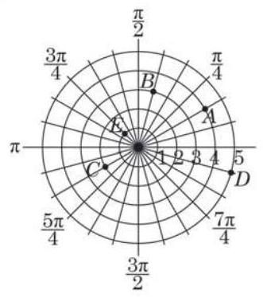
图 2-5-8
解 各点的一个极坐标可分别取为 、
1.(1)若约定 ，试写出图中 、 、 、 各点的极坐标 ;
(2)若约定 ，试写出图中 、 、 、 、 各点的极坐标 .
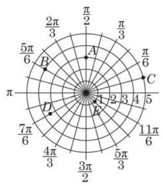
(第 1 题)
和平面直角坐标系的情形类似, 在极坐标系中, 平面内的一条曲线可以用含 这两个变量的方程 来表示,方程 叫做这条曲线的极坐标方程. 此时,曲线和方程有如下的关系:
?
(1)以方程 的解为极坐标的点都在曲线上;
在(2)中，为什么不说曲线上每一点的所有极坐标都适合方程?
(2)曲线上每一点的所有极坐标中,至少有一个极坐标 是方程 的解.
求曲线的极坐标方程, 其实就是找到曲线上所有点的极径和极角应满足的关系式.
例 7 求圆心是 、半径是 的圆的极坐标方程.
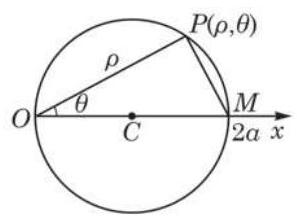
图 2-5-9
解 如图 2-5-9,由题意知圆 经过极点 . 设圆和极轴的另一个交点是 ,则 . 设 是圆 上的任意一点.
若点 不在直线 上,因为 是圆的直径,所以 为直角. 在直角三角形 中, ,即
当 与 时,方程 分别给出了点 与点 .
因此,圆 的极坐标方程是
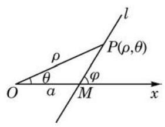
图 2-5-10
例 8 求经过点 ,且与极轴夹角为 的直线 的极坐标方程.
解 如图 2-5-10,设 是直线 上位于点 上方的任意一点, 则
在 中,由正弦定理,得
即
①
若 ,直线 的方程变成怎样?
当点 位于点 下方或与点 重合时,同样可推得①.
因此,方程①就是所求直线 的极坐标方程.
我们不仅可以建立圆、直线的极坐标方程, 也可以建立圆锥曲线的极坐标方程(见课后阅读). 下面, 我们尝试建立上一小节开头时给出的等速螺线的极坐标方程.
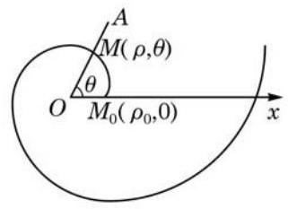
图 2-5-11
例 9 设质点 为射线 上的动点,沿着 方向做匀速运动，同时射线 又绕着它的端点 作等角速度旋转. 求质点 运动的轨迹方程.
解 如图 2-5-11,以射线 的端点 为极点,以射线 的初始位置为极轴,建立极坐标系. 设动点的初始位置是 , 点 在 上运动的速度为 绕点 转动的角速度为 , 经过时间 后,动点到达的位置为 .
因为点 沿 做匀速运动,所以
①
①和②联立实际上就是此运动轨迹的参数方程.
由射线 绕点 作等角速度旋转,得
②
由于从点 到点 是直线运动与旋转运动的合成,因此将从②式得到的 代入①式，得
其中 为常数. 设 ,则方程可写成
这就是所求轨迹的极坐标方程.
这个方程所对应的曲线 (图 2-5-11) 叫做等速螺线或者叫做阿基米德螺线 (Archimedean spiral). 当 时,就得到特殊的等速螺线的方程 ,此时极径与极角成正比.
2.(1)求圆心在极点 、半径为 的圆的极坐标方程；
(2)求圆心在 、半径为 的圆的极坐标方程.
(1)极坐标方程 ，直角坐标方程 ；
(2)极坐标方程 ，直角坐标方程 .
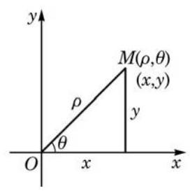
图 2-5-12
极坐标系和直角坐标系是两种不同的坐标系, 有时需要在它们之间进行互相转化.
如图 2-5-12,把直角坐标系的原点作为极点, 轴的正半轴作为极轴,并且取相同的单位长度. 设平面内任意一点 的直角坐标为 ,极坐标为 .
当 时,由三角函数的定义,可以得到如下的关系式:
①
当 时,①式仍然成立.
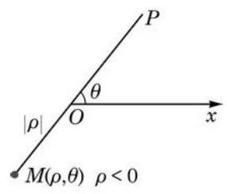
图 2-5-13
当 时,如图 2-5-13,点 的极坐标也可用 表示,这时由于 ,因此由三角函数的定义,可得
这说明 时,①式也成立.
综上所述，关系式①对于点 的任一种表示法表示的极坐标都成立.
关系式①可以作为已知点的极坐标求该点的直角坐标的公式.
从关系式①中解出 、 ,则有
②
关系式②可以作为已知点的直角坐标求该点的极坐标的公式.
通常取 为正数,即 ; 由 确定角度 时,一般根据此点所在的象限取最小正角,满足 .
例 10 化直角坐标方程 为极坐标方程.
例 11 化极坐标方程 为直角坐标方程,并指出它是什么曲线.
( 2 )把点 的直角坐标 化成极坐标.
如果允许 取任意实数, 那么极坐标方程 及 均表示过极点的直线.
在极坐标系中可以给出圆锥曲线的一个简洁的统一方程. 不过, 圆不能被这个统一方程包括, 所以本阅读材料中的圆锥曲线及椭圆均不包括圆.
先讨论一下圆锥曲线的统一定义.
回忆一下抛物线的定义: 给定平面上的一个定点和一条定直线, 抛物线是该平面上到此定点和到此定直线距离相等的点的轨迹, 也就是说, 抛物线是该平面上到此定点和到此定直线距离之比等于 1 的点的轨迹. 我们知道, 给定的定点是抛物线的焦点, 给定的定直线是抛物线的准线.
我们希望模仿抛物线的这一定义给出椭圆的定义. 暂时在直角坐标系中讨论. 设椭圆的一个焦点为 ,长半轴长为 ,则一点 在椭圆上当且仅当
由于圆不在考虑范围内, ,上式经变形化为等价条件
由类似的推导过程可知,双曲线是到焦点 与到准线 的距离之比等于离心率 的点的轨迹,此时离心率 .
由此,可以得到圆锥曲线的一个统一定义: 圆锥曲线是到一个定点 和到一条定直线 距离之比为定值 的点的轨迹. 其中,当 时,轨迹为椭圆; 当 时,轨迹为抛物线; 当 时,轨迹为双曲线.
据此定义可以建立圆锥曲线的统一极坐标方程.
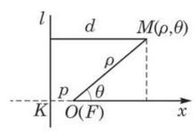
图 2-5-14
设定点 到定直线 的距离为 ,过定点 作定直线 的垂线,垂足为 . 如图 2-5-14,以定点 为极点 ,以 的反向延长线 为极轴,建立极坐标系.
设动点 的极坐标为 ,则点 到定直线 的距离为
而 ,由圆锥曲线的统一定义,有 ,可得 ,整理可得
这就是圆锥曲线的统一极坐标方程. 如图 2-5-15,当 时, 方程表示左焦点在极点的椭圆; 当 时,方程表示焦点在极点,开口向右的抛物线; 当 时,方程表示右焦点在极点的双曲线的右支.
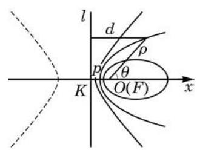
图 2-5-15
(1) (2) .